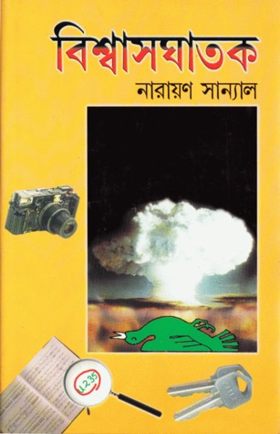

বিশ্বাসঘাতক - নারায়ণ সান্যাল

এই বই সম্পর্কে রিভিউ দিতে গেলে শুরু থেকে কিছু বলতে হবে।
নাইনে পড়ার সময় ফারসিম মান্নান মোহাম্মদীর “অংকের হেঁয়ালি ও আমার মেজকাকুর গল্প” পড়েছিলাম। নিখাদ গণিত জিনিষটাকে গোল্ডবাখের রহস্যময় সমীকরণ আর এক বিজ্ঞানীর সারাজীবন ব্যয় করে সেই সমীকরণ সমাধানের যে অসাধারণ আখ্যান, আমার কাছে এখন পর্যন্ত তাই ছিল বৈজ্ঞানিক জেনার। কিন্তু না, এই বই তার বহু উর্ধ্বে।"বিশ্বাসঘাতক" এর কাহিনী, এবং ধরতে গেলে পুরোটাই বাস্তব এই কাহিনীর শুরুটা রাদারফোর্ডে পরমাণু গবেষণার হাত ধরে, সেই ১৯১৯ সালে। আর শেষটা স্বয়ং বিশ্বাসঘাতকের হাত দিয়ে। নাটকীয়তার প্রয়োজনে অনেক কিছুই কল্পনা করে নেওয়া হয়েছে, কিন্তু ঘটনাবহুল তথ্য প্রতিটা ইতিহাসের খাতিরে সত্য। দ্বিতীয় বিশ্বযুদ্ধের সময় আন্তর্জাতিক দ্বৈরথ যখন চরম তুঙ্গে, জার্মানীর হিটলার ততদিনে সকল ইহুদী বিজ্ঞানীকে দেশছাড়া করে ছেড়েছে। সেই বিজ্ঞানীগুলোর প্রত্যেকের নাম শুনলে চিনবে না এমন মানুষ মনে হয় নেই। মুসোলিনীর জন্য ইতালি ছাড়া, হিটলারের জন্য জার্মানী ছাড়া, এরকম অসংখ্য বিজ্ঞানী নিজেদের তাগিদে বাধ্য হয় আমেরিকায় প্রবেশ করতে। ওদিকে রটে যায় হিটলার পরমাণু বোমা বানানোর জন্য উঠে পড়ে লেগেছে। জার্মানীতে তখন বাধ্য হয়ে অটোহান, হাইজেনবার্গরা ইচ্ছের বিরুদ্ধে হিটলারের আদেশ পালন করতে চেষ্টা করছে।
আর এদিকে নিজেদের তাগিদে ফার্মি, বোরের মতো অসংখ্য বিজ্ঞানী ম্যানহাটন প্রজেক্টে নিজেদের উৎসর্গ করেছে, তাদের লক্ষ্য ছিল কেবল জার্মানীকে হিটলারের কবল থেকে মুক্ত করার জন্য বিকল্প পারমাণবিক শক্তির ব্যবহার, নিউক্লিয়ার বোমা। পুঙ্খানুপুঙ্খভাবে প্রতিটা চরিত্র, প্রতিটা ঘটনা এমনভাবে বর্ণিত তা যেন ঘটেছে চোখের সামনে। কিন্তু এখানেই আমেরিকা দেখালো তার আসল রূপ। যুদ্ধের শেষ পর্যায়ে যখন জার্মানী পরাজিত, তখন বিলিয়ন ডলারের প্রজেক্ট ব্যবহার করলো তারা জাপানের উপর, কেবল মাত্র গিনিপিগের জন্য। প্রথম সারী, দ্বিতীয় সারী সকল বিজ্ঞানী নন-আমেরিকান, অথচ কেবল মাত্র ক্যাপিটাল ঢালার জন্য বিজ্ঞানীদের মতামত উপেক্ষা করে লক্ষ লক্ষ মানুষ নিধন। ঠিক তখনই জন্ম হলো এই বিশ্বাসঘাতক চরিত্রের।
আমি নতুন করে কয়েকটি দেশের রূপ চিনলাম। হ্যাঁ, আমার মতে তার বিশ্বাসঘাতকতা সমুচিত ছিল। নতুবা নতুন এই শক্তির অপব্যহারে তৃতীয় বিশ্বযুদ্ধ তখন দোরগোড়ায় চলে যেত এই ধারণা আবালবৃদ্ধবনিতাও দিতে পারে, অন্তত যারা বইটা পড়বে।
এই বইটাতে কি নেই? আগে বলতে হবে কি আছে। রহস্য, সাসপেন্স, রোম্যান্স, আর পুরাটা জুড়ে নিউক্লিয়ার ফিজিক্স। বাজে পিডিএফের কারণে আফসোস, বইয়ের পৃষ্ঠার স্বাদ থেকে বঞ্চিত হলাম। কিন্তু নারায়ণ সান্যাল, স্যালুট!
3rd May, 2020